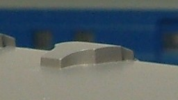
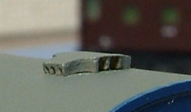
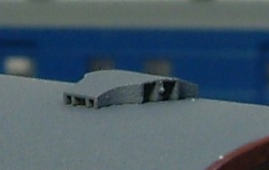
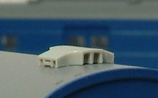
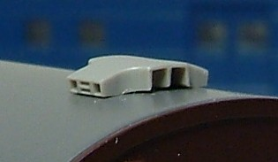

|  |
屋根に一体成型のタイプです。KATOは最近発売したスハ43系以外はこのタイプです。
最近の側面に穴があいているものと比較すると一見見劣りしますが、 一体成型だからといって決して悪いわけではなく、 大きさや形のバランスはよいと思います。 |
|  |
ホワイトメタル製のパーツ。やや細身の形をしています。
5個入り300円とコストパフォーマンス悪めですが 大きさのバランスがよいため下のキハ28用が出るまではキットにはこれを使っていました。 |
|  |
キハ28-3000用です。
取り付け穴がφ0.6×2個。パーツを取り付けた後で向きの調整ができるので、 意外とラフにあけていても調整が利きます。 側面のH型の仕切りの表現は省略されていますが、高さは低くてバランスがよいです。 |
|  |
スハ43系でとうとう別パーツ化されました。 側面にH型の仕切りが表現されていますが影響で少し背が高くなっているようです。
取り付け孔が長孔なのでキットにつけるのは大変かもしれません。 |
|  | 後出しのトミックスもベンチレータは別パーツで、キハ28用から改良しています。 拡大写真で見るとKATOのものと比較してシャープに見えますが、 実際にはその差はわかりません。 |